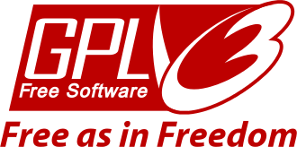

Doc Revision 20170907
SunRiZe is released under the terms of GPL.v.3.0 license.

All the documentation pages are released under the terms of the
Creative Commons 4.0 - BY-SA license

SunRiZe is an open and simplified Model-Driven Development software, specifically oriented to the design of microcontrollers firmware/software.
A Model-Driven Development software (or MDD) is a programmers tool that is able to generate a relevant part of source code, starting from one or more drawings representing the “model”.
Usually a MDD is used to create object oriented source code, in C++ or Java programming languages, starting by UML diagrams.
SunRiZe , uses a different strategy, based on three levels :
The graphics editor
The model
The code generator
That are logically separated, and where only the graphics editor is a fixed part, while the model is easily modifiable and extensible and the code generator is javascript.
In these pages we will describe the standard SunRiZe with the default model that has been designed to create microcontrollers software in C language.
SunRiZe has been developed by following a strong object oriented philosophy in which there is a drawing space, that is able to contains Standalone objects and Connections, each of ones with a proper editing dialog and a generic content, that is a dynamic polymorphic variable.
The entire content of the drawn can be converted to a JSON text file that can be saved or passed to an integrated javascript engine, enhanced with specific functions, expressly designed to produce code.
From this point of view both the model and the language are completely open to modifications and free implementation, of new objects and scripts.
You will find further documentation into the code that is completely commented with Doxygen compliant comments.
In this document we will analyze the current model that is simplified, with a generator designed to produce C-89 compatible code for micro controllers, even without operating system like the Arduino system for example.
Is not so difficult to change the code generator script, to generate code in other languages, as for example the PIC assembler, by changing ecma script.
Changing the model instead is a bit more difficult, and requires to study and change the SunRiZe code that is written in C++-1x.
I chose the GPL license, because SunRiZe is designed to be changed and adapted to other models, and YOU must be free to make this project grows.
Anyway, GPL v.3.0 does not concern the code produced with SunRiZe, as well as the gcc compiler does not concern the code compiled with the compiler.
GPL v.3.0 requires only that if you make any kind of changes to this software you have to release it under the same license that is open and free, that is an acceptable limitation for the purposes of this project.
SunRiZe, freely includes the sources code from the duktape javascript engine that is released under the terms of the MIT license.